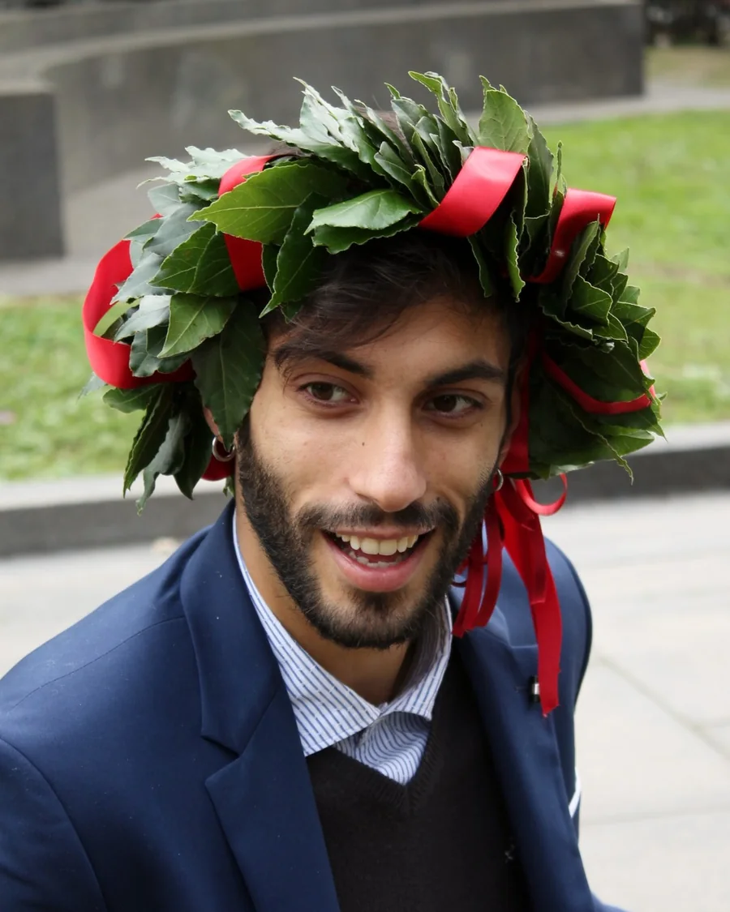
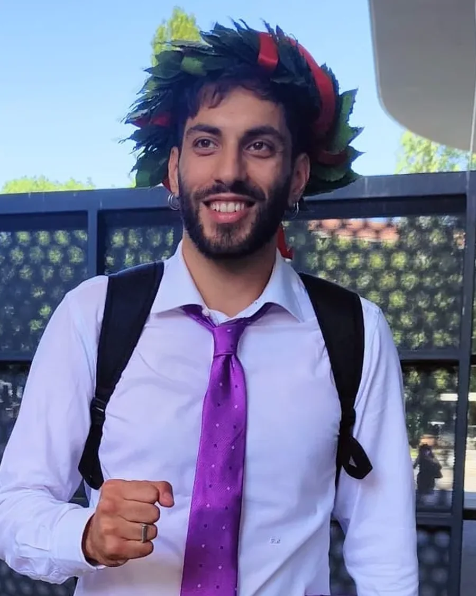
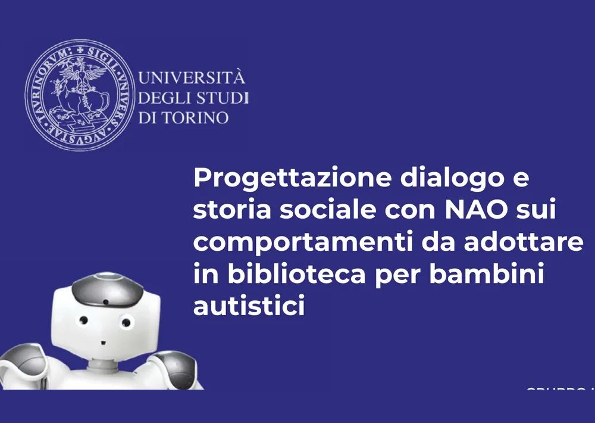
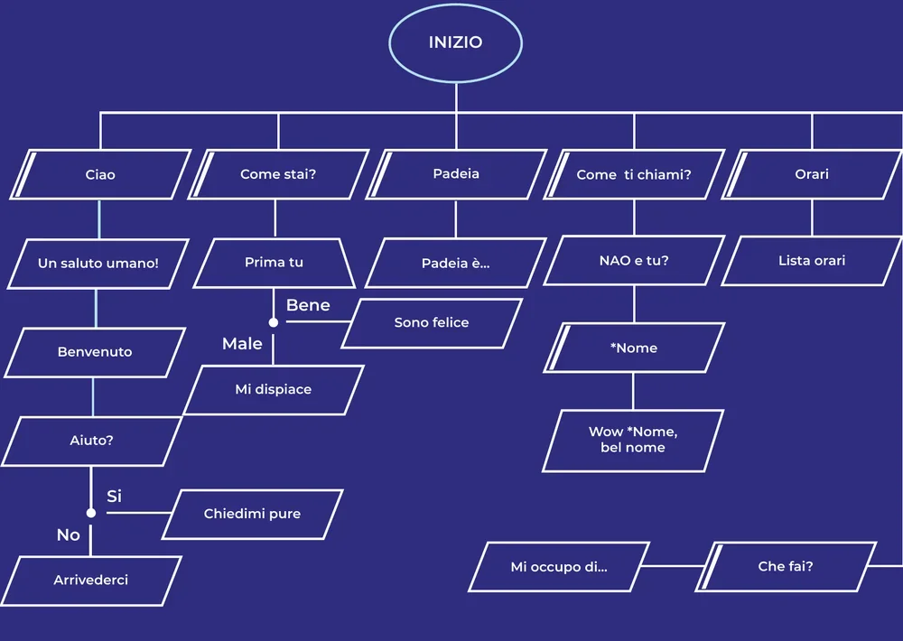
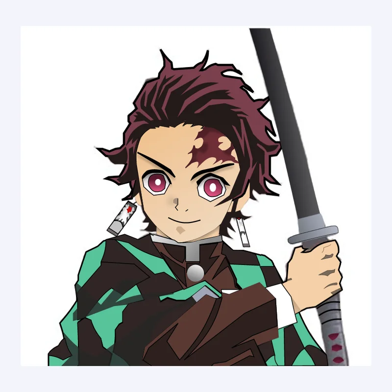
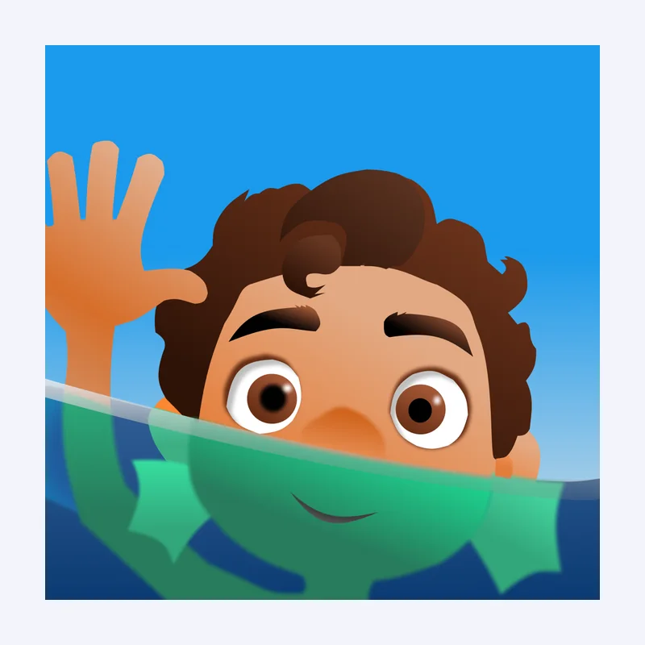
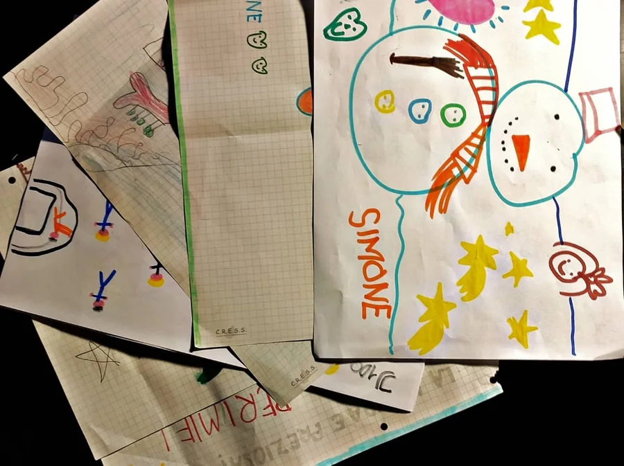
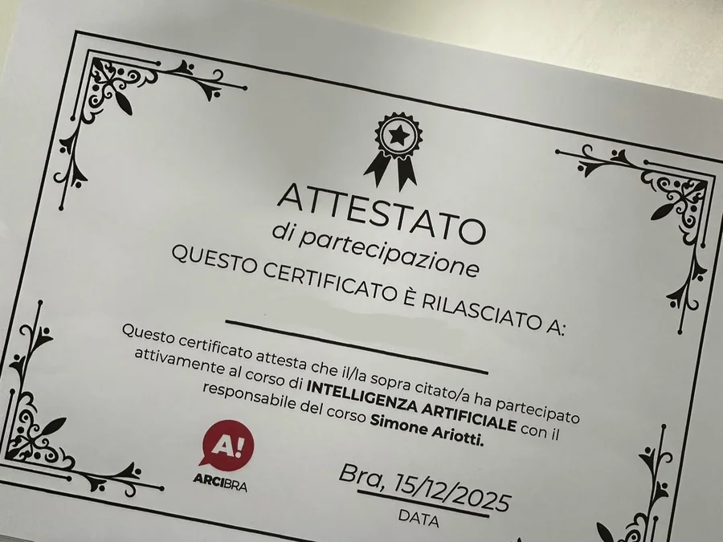
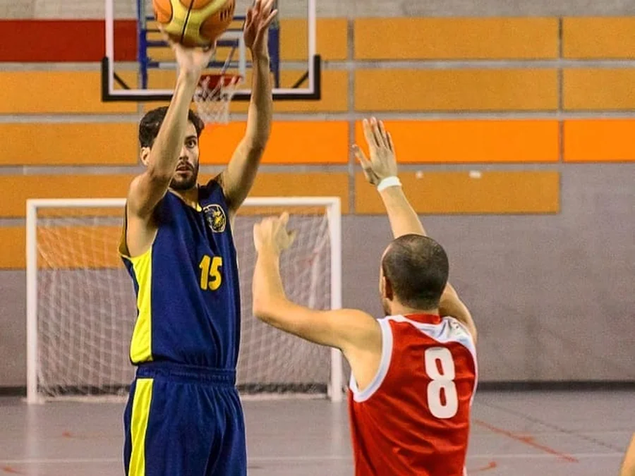
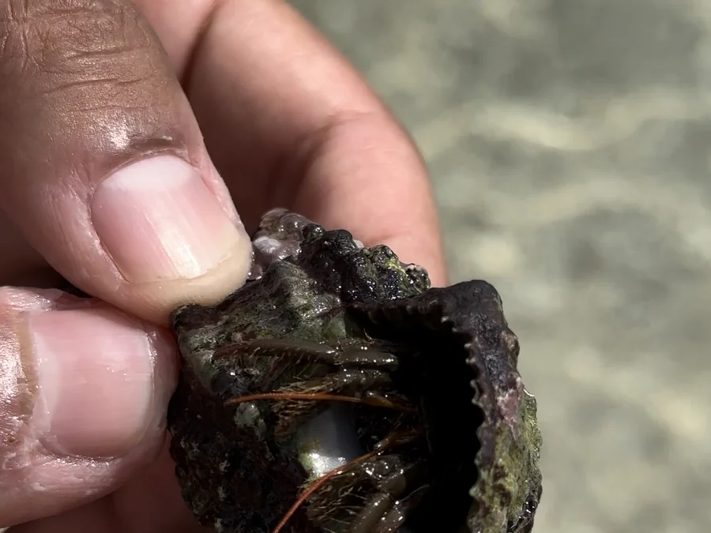

When I was studying I roughly knew what interested me. I didn't yet know it had a name.
01The studies
I chose Communication Sciences out of an interest in the forms of communication that do not go through direct words: images, symbols, layout. Ways of saying things without saying them.


2019 and 2022 · The two graduations
Three years between the two photos. In the first I did not know UX design existed. In the second I had a road in front of me. In between is the moment the scattered pieces stopped being scattered.
The master's straightened my aim. I still liked communication, but I wanted something you could build. That is where I ran into a world I did not know existed: human-computer interaction. I took a course almost by accident and I understood immediately — not "over time", immediately — that this was my road.
The exam project was the dialogue of a humanoid robot, in the middle of the pandemic: four conversation areas, a declared tone of voice, a tree with its branches and its exits.


June 2020 · Human-computer interaction
NAO had to welcome autistic children into a library and explain how to behave without frightening them: it only activated if the child tried to speak to it first. The first dialogue tree I ever drew. With agents today the problem is the same: where the system speaks, where it stays quiet, and what happens when the user leaves the track.
University coursework, not commissioned work. Human-computer interaction, advanced approaches, University of Turin. Group project, four people. NAO robot by SoftBank Robotics, scenario set at Fondazione Paideia, Turin.
I taught myself Figma, hours inside the tool purely because I enjoyed it. It is the most characteristic thing I can say about myself: I have loved this craft since day one, before I even knew it was a craft.


2021 · Hours inside Figma
Figma used as a vector graphics editor, which is not what it is for. No goal, no client: just the pleasure of being inside the tool. Looking at them now makes me smile, and moves me a little: those hours were the advantage I did not know I was building.
Personal exercises, not commissioned work. Tanjiro Kamado is a character from Demon Slayer, by Koyoharu Gotouge and Shueisha. Luca is by Disney and Pixar.
02The crooked path
I taught primary school while finishing my master's, and there I learned that complexity is not simplified by raising your voice, but by finding the right order in which to explain it. I worked in a software house, between websites and digital communication. I did QA on enterprise products, learning to read products from the inside: to see where they break before asking what they should look like.

2020–2021 · A year as a teacher
What the children gave me over the course of the year. I kept every one. In a classroom the feedback on your work arrives immediately and unfiltered: you know in real time whether what you said landed, and you cannot blame the people listening.
03What I do now
By the time I got to product design that path had already given a shape to how I work. I take complex problems, break them into their fundamental pieces and reassemble them into structures that hold as they grow. I have been doing it for three years on a B2B enterprise suite: a design system built from scratch, interaction patterns for agentic AI systems, conversational architectures.
That does not mean aesthetics do not count. First I wanted them scalable, then I learned to make them beautiful too: beauty is not a finish laid on top of a system, it is part of how a system convinces the people who use it.
As a child one of my favourite games was sticker scene books: fixed backdrops, stickers to recombine, a new scene every time out of the same pieces. I thought back to it years later, drawing components to reuse across different products: the thread started further back than I realised.
There is another place where this craft is useful to me. Since October 2025 I have been teaching AI courses for Arci, aimed at people who do not work in IT. It is the same craft as the primary school teacher and the same craft as design: finding the right order in which to explain something complex, and removing everything that does not help you understand it.

Since October 2025 · Teaching
The certificates come from the association, I hand them out at the end of the course. The part I really like is the discussion in the room, and seeing someone walk out able to use a tool that intimidated them on day one.
04Outside work
I play Magic: The Gathering, mostly sealed formats, the ones where you do not build the deck you want but the best one possible from the cards you happen to get. To me that is design under another name: given constraints, limited resources, and a community around the table. Basketball was home for more than ten years, and in some way it still is.

Outside work · Basketball
Number 15. In that moment you have less than a second to choose: shoot, pass or wait. It is a sport of decisions made on incomplete information, and that is why it never left me.
As a child I dreamed of being a marine biologist. I did not become one, but animal biology, marine biology in particular, is one of the places my curiosity always returns to: I am fascinated by living systems, by how the parts hold the whole together.

Outside work · Marine biology
A hermit crab found on a beach. The shell it carries grows in a logarithmic spiral: every turn is wider than the last, but the rule that generates it never changes. A system that expands without rewriting its own rules: my favourite definition of a design system.
I travel to see the world from perspectives that are not mine: different cultures reason differently, and for someone who designs that is oxygen. It is an interest I am turning into something more structured with Rotte e Racconti, a travel publishing project I run with my brother: he walks the routes and documents them, I build the editorial system that tells them.
AI changed the way I am curious: I can keep more disciplines going in parallel than was possible before. Go deep, connect, come back.
Many-sided by choice, not by indecision.
If you got this far, maybe we have something to talk about.
Write to me